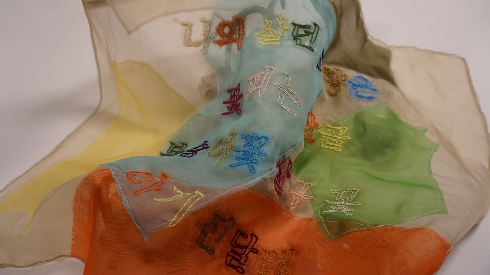

ceramics, organza fabric, and yarn, 21 x 21(inch), 2024
Place of origin: Seoul, Korea
Current Location: Seoul, Korea / Providence, USA

1
My work, "Requiem for Tulips," reflects on the scarcity of genuine, untouched nature. In our current world, natural spaces are increasingly man-made, with parks and arboretums relying on human intervention for their existence and maintenance. These artificial environments are subject to human decisions, determining their survival and design. The tulips in my work symbolize this human manipulation and control over nature.
By selecting tulips, I also reference their rich political and economic history. In the 1600s, tulips sparked a frenzy due to their beauty, leading to over planting and eventual environmental harm. Once their value declined, they were discarded and neglected, embodying the transient nature of human greed. Tulips represent small-scale, man-made nature and the fleeting value we place on it.
In this context, the exhibition's exploration of individuals as strangers and the potential for solidarity resonates deeply with my work. Like the tulips, which are manipulated and discarded by human whims, people often feel like strangers within societal norms and values. This alienation, whether from environmental neglect or social disconnection, calls for a deeper understanding and solidarity.
The decay and death of the tulips in my work questions the ethics of using and neglecting nature, urging us to find common ground and solidarity in our shared experiences of alienation. "Requiem for Tulips" emphasizes the importance of caring for the marginalized in our society and living in solidarity with those around us. The common experience of feeling like strangers can become the foundation for a collective effort to respect and care for one another.
2
Joohee’s work is about grandmothers who lived in a male-centric patriarchal society, supporting their families behind the scenes. Without them, many families would not have thrived.
The part where these grandmothers sang songs while they worked especially intrigued me.
I am creating embroidery on the fabric by capturing the lyrics of one of the songs that fueled their labor. Embroidery is one way I understand the labor grandmothers had, and various colors represent how beautiful and precious the labor is.Therefore, I am referencing the lyrics to show respect and care for grandmothers and their contributions.
3
The Korean title Babsangbo roughly translates to “fabric food cover/cloche.” When appreciating his work, I thought of my maternal grandmother. While my mother took care of my younger sibling, I was able to spend a lot of time with my grandmother. I still vividly remember how she would always prepare a meal for me and cover it with a cloche, ready for me when I came in after playing outside for a long time. Whenever I recall Babsangbo, I always remember her love and care for me. I wanted to bridge them and tulips together through their preciousness.